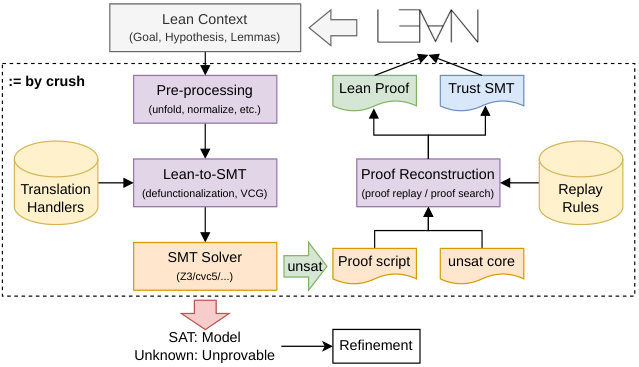

Implements crush, an SMT-backed Lean tactic using defunctionalization, with soundness formalized in Lean and kernel-checked proof reconstruction from solver certificates.
Abstract
Lean's rich expressiveness supports higher-order functions, inductive datatypes, and user-defined abstractions, making it challenging to translate proof obligations into first-order Satisfiability Modulo Theory (SMT) queries and reconstruct kernel checked proofs. We present crush, an extensible SMT-backed proof automation framework for Lean. To bridge the gap between Lean's higher-order constructs and the solver's first-order logic, crush uses defunctionalization to encode function values and their applications. We formalize this translation for a supported higher-order fragment and prove its soundness. Moreover, crush provides metaprogramming interfaces for extending both Lean-to-SMT translation and the reconstruction of Lean proofs from solver certificates without modifying the translation pipeline. We implement crush as both a tactic and a backend for other third-party automation systems. We show that across four such use cases that target verification and general proof automation, crush discharges more obligations than the competing backends and reconstructs more kernel-checked proofs than the baselines.
Problem
Lean goals use higher-order functions, inductive types and user abstractions, which makes them hard to translate into first-order SMT queries. Reconstructing kernel-checked proofs from solver outputs is also difficult.
Approach
crush negates the goal, collects hypotheses and lemmas, and runs normalization, monomorphization and bounded quantifier instantiation before translating to SMT-LIB. Higher-order functions are encoded through defunctionalization, and the soundness of this encoding is formalized in Lean for a monomorphic, nondependent fragment. Users can extend the translation and the proof reconstruction through metaprogramming attributes. On UNSAT, crush rebuilds a proof either by core-guided search with tactics such as omega and grind, or by replaying Alethe proof steps.

Figure 1 : The crush pipeline.
Results
The evaluation covers 754 verification conditions from four suites (Curated, Cashmere, Velvet, PLean), the last three generated through Loom. crush solves 709 (94.0%) when trusting the solver and 693 (91.9%) with kernel-checked reconstruction. Both figures exceed the baselines lean-auto, Duper, lean-smt and grind.